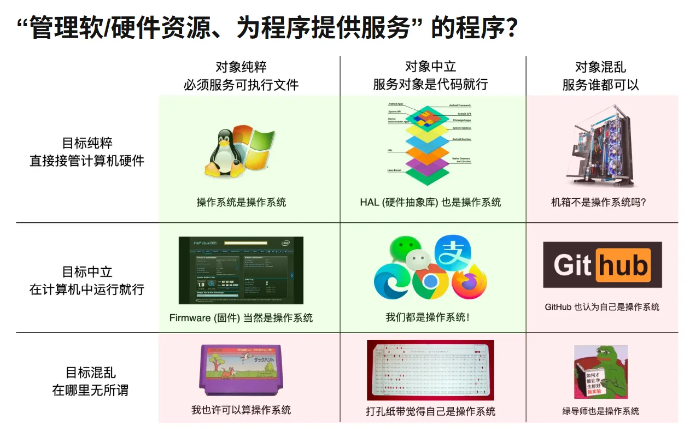

资源
- 2025 南京大学操作系统原理 哔哩哔哩_bilibili
- 操作系统：三个简单的部分（OSTEP） | Remzi H.Arpaci-Dusseau,Andrea C.Arpaci-Dusseau | download on Z-Library
- Yanyan's Wiki
正文
科研劝退信
注意
该信以批判视角揭示了当前学术圈的功利化生态：在政策指挥棒（如国家战略需求导向）与资源紧缩背景下，学术创新常被简化为“包装故事”的生存技能，导师群体陷入科研理想、考核指标与团队管理的多重博弈，学生则面临个人发展诉求与“学术流水线”工具属性的根本矛盾。导师劝退的本质是提醒学生清醒认知学术体系的运行规则——若无法在现实妥协中坚守研究初心，或缺乏自主突破困境的驱动力，需审慎评估读研的代价与收益。此信并非否定学术价值，而是以坦诚姿态呼吁理性选择，折射出学术界内部对系统性困境的自省与责任感。
我们作为科技工作者，哪怕科研甚至专业训练不及格，都需要学会的保命的技能是编故事：publish or perish (甚至有一个桌游)。学术界对 “创新” 是有包容性的：改变世界的发现总是领先于时代。此话不假，但也成了我们为 “低价值学术” 辩护的挡箭牌：哪怕内心认为这是绝无可能有用的东西，在利益面前，就总是能编出点 novelty，说它未来大约的确可能是有那么点用的。对付大同行，反正只要偷换概念，说得天花乱坠弄不明白就行。虽然有时候一本正经胡说八道是不得已为之，但久而久之，我们就习惯了缝缝补补、拉帮结派、维持体面的舒服日子。反正我已经实现闭环，管我研究品味有多差，钱和权力总是越滚越大的。
就这样，在 “国家科技要进步” 的大指挥棒下，学术圈经历了 SCI、论文分区分级、人才帽子、破五唯等一系列政策引导，最近的新闻是教育部 2022 年印发的《关于加强高校有组织科研 推动高水平自立自强的若干意见》，明确要求我们 “以国家战略需求为导向”。曾经资源管够、经费管饱的时候，风险投资就风险投资，大家其乐融融。现在地主家也没有余粮了，只能整出这么一招，意思是和国家战略需求没关系的，先靠边站，收缩投资的范围。当然了，学校里聪明人可不少，有招就能拆招，比如有话语权的人可以玩 “定义国家需求” 的游戏，或者在囚徒困境中向国家机器靠拢……
这就和各位天命人 (研究生) 扯上关系了。
学校本质上还是培养人的，我们国家的希望永远是寄托在下一代人身上的。我们当然希望保住底线的同时，能奖励其中最出色的那些。然而，培养人的过程一旦牵扯到学科评估的 KPI，就难免倒果为因，考核什么就做什么来得最方便。嘴上说招生工作优中选优、宁缺毋滥，但你少招一个人，学科评估就难看一点。嘴上说支持 “十年磨一剑”，但也万万不会放过你每年的产出——万一你躺平了最后就磨出个绣花针呢？
因此，天命人们要意识到国家和学校在博弈，学校和院系在博弈，院系和教师在博弈，教师和金字塔底层的吗喽们也在博弈。比如经济上行周期时的指挥棒是 SCI 论文，成就了今天的生化环材。我眼睁睁看着化院的精神小伙被导师催残得人样都快没了，博士毕业进了工业界立马满血复活。2010 年 CCF 发布了论文分级列表，计算机系立马行动制定了 “毕业套餐”。2011 年马所长发表了南大软件所第一篇软工 A 类会议论文 (FSE)。我在 PhD 期间发了 ICSE'14, ASE'15 和两篇 FSE'16，那时候 Program Committee 都没啥华人，甚至还有素不相识的 PC 在 pdf 上从头到尾批注论文，我这个产量在同龄人中也算是很可以了。再看看今天，软工四大会都快成 Chinasoft 了，论文迅速贬值 (没有像样的论文基本就直接出局了)，你还得去卷别的东西：系统工程实现、影响力、研究工作的企业转化，最终变成人才头衔……指挥棒的初衷都是好的，但是嘛，有人的地方就有江湖，至于怎么包装自己的成果，那就是八仙过海、见仁见智了。
所以本质的矛盾是，大部分天命人希望的是获得指导、提升自己、求得职位。但无论是哪种导师，想做大工作的、想做项目的、想躺平的，都很有可能和你的利益发生冲突。你最想要一秒立即毕业，不想浪费时间做没用的项目，但先富起来的人拉高了标准，老板还想叫你出活。吗喽们刚刚经历了 “上课耽误学习” 的本科四年，就被赶鸭子上架，只顾着焦虑地刷 GPA 和各种履历想让自己在竞争中能取得一些优势，结果反而导致了基础不牢，写代码都还是个半吊子，于是产生出许多因果的报应，看看这个有趣的知乎问题吧。
当然，不管这个体系怎样，国家的终极宏观策略是相信我们这片土地上“小概率事件重复必然发生”，因此只要维持体系正常运转，就已经足够了。我们在互联网还是法外之地的时候见过世面的人，就总有已经先一步 “觉醒” 了创新的基因，有能力敢做一些大事了的人——对国家来说，有些水土能养起这样的人，其他人自会有着落。从黑猴子到 DeepSeek，总会有人出头的，他们什么时候成长起来，国运就来了。
所以啊，我有时候就想有一个志同道合的天命人，我们能提供一个相对宽松不压榨的环境、提供自己对问题的见解，也算认识一些人，有解决不了的问题还可以再找人问，就把一段宽松自由的求学经历当成是一个 startup，能自己驱动自己，遇到问题自己搞定，在我还能帮点忙的小领域里做点什么毁天灭地的东西。
我知道这么写很容易让我招不到学生，但其实我觉得 “创业” 并不是一件那么难的事情，只要你是真心喜欢折腾计算机做各种好玩的事情，而不是总问换什么好处就行：如果你能看穿学校教的之外的东西，并且能自己自发地补上短板，那就足够了。但这句话分量很重，恐怕已经把金字塔底都凿穿了吧。
我们每个人都是时代的因和果。
1. 操作系统概述
1.1 课程简介
1.2 为什么学操作系统？
AD 2009
互联网和开源改变了一切（2009 时代，不一定适用于如今的 AI 时代）
- MIT OCW; Geometric Folding Algorithms (Erik Demaine)
有了亿点点“改变世界”的梦想，不想再做一个咸鱼了
- 每天晚上床上刷 Wikipedia（管它看得懂看不懂）
- PhD 开始坚持阅读 Communications of the ACM 杂志
AD 2018
海量的前端程序员重塑了开源生态
- ES5: 2009, react.js: 2013, vscode: 2015, ...
- “编程”不再是少部分 geek（极客）的特权
有了一本合适的新教材
从美国回来，看到了 bar 在哪里
- 至少有希望可以和外国人一样好了！
AD 2025（现状）
再没有人类可以阻止中国人了（DeepSeek 的出现）
- 人才的积累已经突破了临界点
- 没有行业能挡得住中国人了
人类已经创造出了全新的物种（LLM）（GPT-4 级别的模型是人类命运的转折点，对常识性问题几乎没有幻觉）
- 繁荣之后，我们也许要考虑生死存亡的问题……？
- 人与人之间的生产力将会呈现断崖式的差距
- 面向考试的 “功利” 学习收益急剧减少
- AI 技术使顶级的 “人类劳动力” 逐渐失去价值
为什么学
那么，为什么学习操作系统？
学习 X 的目的
- 人类的文明
- 基本动机、基本方法、里程碑、走过的弯路
- 走向应用、创新、革命
- 操作系统的历史就是计算机软硬件发展的历史
- 基本动机：更快更好地服务更多应用
- 基本方法：“Building Abstractions”
- 里程碑：UNIX, Linux, ...（建立各种的抽象）
- 历程中藏着一个问题的答案
- 什么是今天计算机世界万丈高楼工程奇迹的地基？
学习操作系统能得到什么？
觉醒体内的 “编程力量”
-
能够知道程序能做什么、为什么能做
-
为什么能创建窗口？
（直接问 AI）
因为操作系统提供了窗口系统（Windowing System）和图形界面 API（如 WinAPI、X11、Wayland、Quartz）来支持窗口的创建和管理。
-
为什么 Ctrl-C 有时不能退出程序？
Ctrl-C通常用于向正在终端中运行的程序发送中断信号（SIGINT），让程序有机会终止。但是在某些情况下，Ctrl-C可能无法使程序退出，常见原因包括：- 程序捕获并忽略了
SIGINT - 程序卡死在系统调用中
- 线程或子进程处理不当
- 前台控制权被转移
- 运行在图形界面或伪终端中
- 程序捕获并忽略了
-
为什么有的程序能把组里服务器的 128 个 CPU 用满？
-
-
每天都在用的东西，能实现出来了
- 浏览器、编译器、IDE、游戏/外挂、杀毒软件、病毒……
-
于是，你可以去寻找你的梦想！（借助 AI，得到与行业专家相当的能力，基于操作系统，实现每天都在用的东西）
1.3 什么是操作系统？
操作系统定义
Operating System: A body of software, in fact, that is responsible for making it easy to run programs (even allowing you to seemingly run many at the same time), allowing programs to share memory, enabling programs to interact with devices, and other fun stuff like that. (OSTEP)
操作系统：实际上是一组软件的总称，负责让程序能够方便地运行（甚至让你看起来好像可以同时运行多个程序），让程序能够共享内存，使程序能够与各种设备交互，以及其他类似有趣的功能。（摘自《OSTEP》）
{kind=link}

操作系统是来帮我们的，不是来折磨我们的
- 我们不需要 “精准” 的教科书定义
- 操作系统是帮我们更好地开发程序的
- 很多事办起来很复杂，所以需要操作系统（所以知道 “能做什么” 很有必要）
理解操作系统：理解它发展的历史
- 操作系统如何从一开始变成现在这样的？
- 三个重要的线索
- 硬件（计算机、计组、数电、模电）、软件（程序，本课程视角、数据结构与算法、网络……）、操作系统（管理硬件和软件的软件）
会编程，你就拥有全世界！
Logisim 是本次课程的第一个彩蛋（一个用于学习和设计**数字电路（digital circuits）**的开源可视化软件）
- 同样的方式可以模拟任何数字系统（包括计算机系统）
- 同时还体验了 UNIX 哲学
- Make each program do one thing well（让每个程序做好一件事）
- Expect the output of every program to become the input to another（期望每个程序的输出成为另一个程序的输入）
命令行是一个非常有趣的设计
- 在自然语言和编程语言之间达到了平衡
计算机系统基础
-
高级语言代码 → 指令序列 → 二进制文件 → 处理器执行
- 源代码文件（
.c） （编译：由编译器如 gcc 将 C 代码转换为汇编代码） - 汇编代码文件（
.s） （汇编：由汇编器将汇编代码转换为机器指令） - 目标文件（
.o） （链接：由链接器将多个目标文件和库链接为可执行程序） - 可执行文件（
.exe或 无扩展名的 ELF） （加载与执行：由操作系统加载，交给 CPU 执行二进制指令） - 处理器执行程序指令
- 源代码文件（
-
Everything is a state machine（一切都是状态机，一大堆的 0 和 1 在时钟的驱动下变成了另一大堆的 0 和 1）
本课程讨论狭义的操作系统
- 操作系统：硬件和软件的中间层
- 对单机（多处理器）作出抽象
- 支撑多个程序执行
- 这个概念可以推广到 “Systems”
- 对多台计算机抽象（分布式系统）、对存储设备的抽象（存储系统，如 NAS）、……
理解操作系统
- 理解硬件（计算机）和软件（程序）的发展历史
- 夹在中间的就是操作系统
操作系统历史
1940s
“图灵机”的数字电路实现 ENIAC（1946.2.14）
情人节也是第一台电脑的生日
- 执行完一条指令后，可以根据结果跳转到任意一条指令
- 用物理线路 “hard-wire”
- 重编程需要重新接线：Programming the ENIAC
假设你想让 ENIAC 计算
y = 2x + 5那你要：
- 在“常数发生器”里存入 2 和 5；
- 把输入的
x卡片连接到乘法器输入端；- 把乘法器结果连到一个累加器；
- 再把常数 5 接进去做加法；
- 把结果输出到穿孔卡。
整个过程都是用电缆实现的计算逻辑电路，而不是代码。
ENIAC 的诞生标志着计算机时代的开端，具有里程碑意义：
- 它是第一台真正的电子通用计算机（虽然非存储程序型）。
- 它证明了电子计算设备在速度和可靠性上的巨大潜力。
- 它为后来的冯·诺依曼体系结构计算机奠定了基础。
1940s 的计算机硬件：电子计算机的实现
1945 年，数学家 约翰·冯·诺依曼（John von Neumann） 提出了一个革命性的想法：
“程序和数据其实都是信息，为什么不都放在同一内存里？”
冯·诺依曼体系结构的核心思想只有一句话：
程序和数据以相同的形式存储在同一内存中，计算机自动读取并执行程序指令。
- 逻辑门：真空电子管
- 存储器：延迟线 (delay lines)
- 输入/输出：打孔纸带/指示灯
1940s 的计算机软件
打印平方数、素数表、计算弹道……
- 解释了《程序设计》教课书上经典习题的来源
- （是时候改一改了）
- 大家还在和真正的 “bugs” 战斗（虫子飞进电路了）
1940s 的操作系统
没有操作系统
连编程语言都没有
- 大家还在画流程图、写机制代码、戳纸带
能把程序跑起来就很了不起了
- 程序直接用指令操作硬件
- 不需要画蛇添足的程序来管理它
1950s-1960s
1950s-1960s 的计算机硬件
硬件改进了，逻辑门-存储-I/O 的基本格局没有变
- 晶体管、磁芯内存、丰富的 I/O 设备
- I/O 设备的速度严重低于处理器的速度，中断机制出现 (1953)
1950s-1960s 的计算机软件
更复杂的通用的数值计算
- 高级语言和 API 诞生 (Fortran, 1957)：一行代码，一张卡片
- 80 行的规范沿用至今（用数字编码出字母）

纸带上是一排排小孔，每 8 个孔代表一个字符。
下图是“示意图”（非真实孔洞尺寸）：
Paper Tape (each column = 1 character) -------------------------------------- | o o o o o o o o o o o | | o o o o o o o o o o o o o | | o o o o o o o o | -------------------------------------- ↑ represents "D"把整个程序打出来，会像这样（示意排列）：
fortran D O 1 0 I = 1 , 5 P R I N T * , I 1 0 C O N T I N U E E N D纸带上看不到文字，只是一排排按特定编码（如 ASCII 或 EBCDIC）打出的孔。
要“读懂”它得用专门的纸带阅读器。
Fortran 已经“足够好用”
- 迎来了自然科学、工程机械、军事……对计算机的需求暴涨
1950s-1960s 的操作系统
库函数 + 管理程序排队运行的调度代码
- 写程序（戳纸带）、跑程序都是非常费事的
- 计算机非常贵
- \50,000$1,000,000$
- 通常一个学校只有一台
算力成为服务，操作系统概念形成
- 多用户轮流共享计算机，operator 负责操作程序切换
- Operating systems（操作系统/作业系统）
- （今天算力又成为服务了，如调用大语言模型）
CTSS (Compatible Time-Sharing System，兼容分时系统)
-
操作系统中出现了各类对象：设备、文件、任务……
-
CTSS Subroutines（子程序）:
RDFLXA: Read an input line from console WRFLX: Write an output line to console DEAD: Put the user into dead status, with no program in memory DORMNT: Put the user into dormant status, with program in memory GETMEM: Get the size of the memory allocation SETMEM: Set the size of the memory allocation TSSFIL: Get access to the CTSS system files on the disk USRFIL: Change back to user's own directory GETBRK: Get the instruction location counter at quit英文命令 英文说明 中文翻译 RDFLXA Read an input line from console 从控制台读取一行输入 WRFLX Write an output line to console 向控制台输出一行内容 DEAD Put the user into dead status, with no program in memory 将用户置于“终止”状态（内存中无程序） DORMNT Put the user into dormant status, with program in memory 将用户置于“休眠”状态（程序仍保存在内存中） GETMEM Get the size of the memory allocation 获取当前内存分配大小 SETMEM Set the size of the memory allocation 设置内存分配大小 TSSFIL Get access to the CTSS system files on the disk 访问磁盘上的 CTSS 系统文件 USRFIL Change back to user's own directory 切换回用户自己的目录 GETBRK Get the instruction location counter at quit 获取程序退出时的指令位置计数器（程序执行地址） 这些命令来自早期的CTSS（Compatible Time-Sharing System）——这是 1960 年代麻省理工学院（MIT）开发的世界上第一个分时操作系统之一。
那时候计算机允许多个用户同时在线，每个用户的“状态”就用这些命令来管理。
1960s-1970s
1970 年代，纸带开始被键盘 + 显示器 + 磁带/磁盘取代。
1960s-1970s 的计算机硬件
集成电路、总线出现
- 更快的处理器
- 更快、更大的内存；虚拟存储出现
- 可以同时载入多个程序而不用 “换卡” 了
- 更丰富的 I/O 设备；完善的中断/异常机制
更多的高级语言和编译器出现
- COBOL (1960), APL (1962), BASIC (1965), PASCAL (1970), C (1972)
- 计算机科学家们在今天难以想象的计算力下开发惊奇的程序
个人电脑登上历史舞台
1960s-1970s 的操作系统
能载入多个程序到内存且调度它们的管理程序
- 为防止程序之间形成干扰，操作系统自然地将共享资源 (如设备) 以 API 形式管理起来
- 有了进程 (process) 的概念
- 进程在执行 I/O 时，可以将 CPU 让给另一个进程
- 在多个地址空间隔离的程序之间切换
- 虚拟存储使一个程序出 bug 不会 crash 整个系统（操作系统不允许某个程序访问任意地址的内存）
操作系统中自然地增加进程管理 API
- 既然可以在程序之间切换，为什么不让它们定时切换呢？
- Multics (MIT, 1965)：现代分时操作系统诞生
1970s+ 的操作系统
图形化操作系统最早雏形出现在 1968–1973 年的 Engelbart 演示和 Xerox Alto，商业化 GUI 系统从 1981 年 Xerox Star 开始，真正走入个人用户的普及阶段是 1984 年 Apple Macintosh。
UNIX 奠定了今天计算机世界的基础
- 1973: 信号 API、管道（对象）、grep（应用程序）
- 1983: BSD socket (对象)
- 1984: procfs (对象)……
- UNIX 衍生出的大家族
- 1BSD (1977), GNU (1983), MacOS (1984), AIX (1986), Minix (1987), Windows (1985), Linux 0.01 (1991), Windows NT (1993), Debian (1996), Windows XP (2002), Ubuntu (2004), iOS (2007), Android (2008), Windows 10 (2015), ……
1.4 怎样学操作系统？
试着去成为一个有梦想的 CS 人
- 同学总结：“考试完全在掌控中”，绝对不会考犄角旮旯的细节（不是没有细节，但如果掌握了 big picture，你可以根据自己的理解补充细节）
知道 “编码” 是你手中的利剑
- 能够在大语言模型的帮助下自己动手解决问题
- “什么都不怕”: vim, tmux, grep, binutils, 前端, ...
- 享受创造的乐趣
- 在出 bug 时默念 “机器永远是对的、我肯定能调出来的”
- 随时多问一句：“我这么做显得专业吗？还能更好吗？”
鉴定学术诚信（Academic integrity）
你的梦想可能不在计算机行业
- 但你的编程知识（短期内）一定能帮到你
成为 Power User

漫画内容概述：
第一格： 一群人站在一颗定时炸弹前，情急之下叫来了 Rob，说：“Rob！你会用 UNIX！快来！”
第二格： 屏幕显示解除炸弹的条件：
“要解除炸弹，请在第一次尝试时输入一个有效的 tar 命令，禁止查谷歌，你有 10 秒钟。”
第三格： 众人沉默，一脸无助地盯着炸弹。
第四格： 一人轻声问：“……Rob？” Rob 低头，说：“对不起。”
笑点解析：
tar是一个 UNIX/Linux 系统中用于打包文件的命令，功能强大但语法复杂且不直观。- 很多有经验的 UNIX 用户也经常记不住正确的 tar 语法（比如
tar -czvf、tar -xvzf等各种组合），每次用都要查手册或搜索引擎。- 因此，这幅漫画用“拯救世界靠你一次性打对一个 tar 命令”的夸张设定，幽默地讽刺了
tar命令难以记忆的现实。
但是现在在 AI 时代，这张图已经成为了历史。
感到 Linux/PowerShell/... 很难用？
- 只要知道什么能做，然后学会提问就行了
开始写代码
命令行 + 浏览器就是全世界！
- 不需要讲语言特性、设计模式……编程中自然而然会有体会
开始你的《操作系统》课旅程！